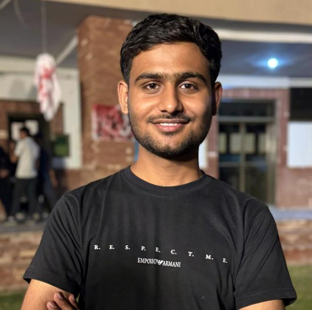

Muhammad Abdullah
Computer Engineer

Summary
Undergraduate Computer Engineering student with expertise in AI, software development, and hardware-software systems. Skilled in Python, C++, Java, SQL, and Web Development with hands-on project experience. Focused on building innovative solutions and pursuing a career in AI-powered technologies.
Education
COMSATS University Islamabad — Lahore, Pakistan
Bachelor of Science in Computer Engineering (2023 – 2027, Expected)
- Currently in 5th semester.
- Coursework includes Data Structures & Algorithms, Computer Organization & Architecture, Signals, Databases, and Probability Methods in Engineering.
- Practical experience with VHDL, MIPS Assembly, MATLAB, and SQL.
- Exploring Python, Web Development, and Generative AI alongside academics.
Punjab Group of Colleges (PGC), Bahawalpur — Bahawalpur, Pakistan
Intermediate in Pre-Engineering (2021 – 2023)
Work Experience
Intern Web Developer (Internship)
MKY Global Forwarding — Warsaw, Poland (Remote)
Mar 2025 – Jul 2025 (5 months)
- Gained hands-on experience in web development with a focus on HTML, CSS, and modern frontend practices.
- Contributed to startup-level projects, improving code quality and functionality in a collaborative environment.
- Enhanced understanding of scalable web applications and team-based software development.
C++ Developer Intern (Internship)
Rhombix Technologies — Lahore, Pakistan (Remote)
Jan 2025 – Mar 2025 (3 months)
- Developed and optimized C++ applications, applying knowledge of data structures, algorithms, and object-oriented programming.
- Designed efficient, scalable, and high-performance solutions for project requirements.
- Strengthened skills in AutoCAD and C programming for engineering-related applications.
Skills
Programming & Development:
- Python, C++, Java, C, SQL, JavaScript, HTML, CSS
Core Competencies:
- Data Structures & Algorithms, Object-Oriented Programming (OOP), Database Management, Web Development, Generative AI
Tools & Technologies:
- MATLAB, VHDL, MIPS Assembly, AutoCAD, Git/GitHub, FastAPI, Tauri, Figma
Specialized Knowledge:
- Computer Organization & Architecture, Software-Hardware Integration, AI-powered Applications
Soft Skills:
- Problem-Solving, Adaptability, Team Collaboration, Critical Thinking
Awards and Certifications
Create Generative AI Apps on Google Cloud
- Provider: Google Cloud
- Completed on: July 20, 2025
Generative AI for Everyone
- Provider: DeepLearning.AI
- Completed on: July 27, 2025
Other